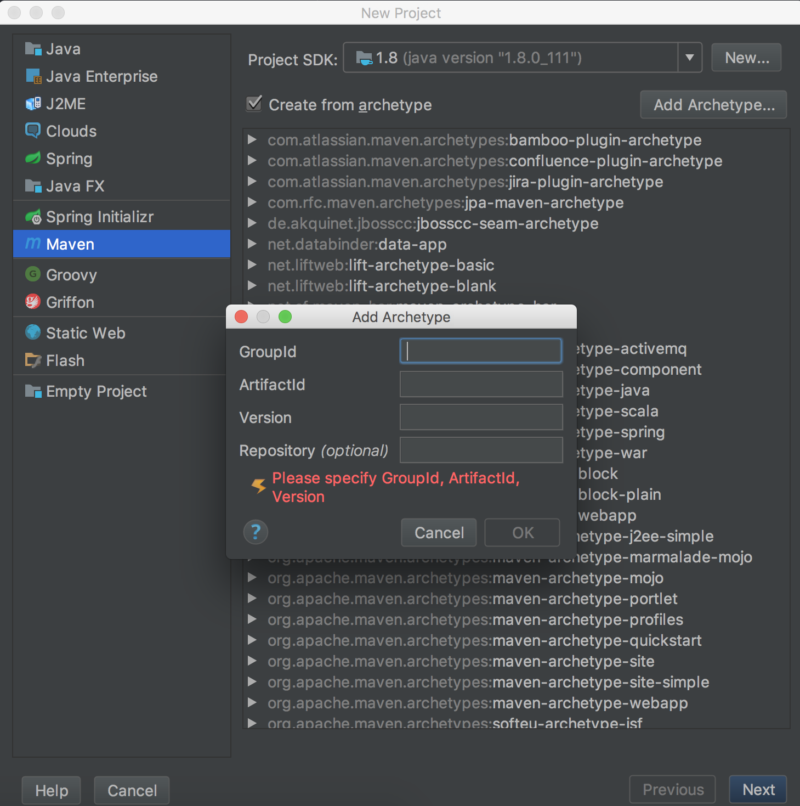

Idea中通过Maven创建 Archetypes
文章目录
最近在做项目的时候发现Web项目中很多配置都是相对固定的，比如Spring，常用的配置都是那些，每次新建工程的时候很是麻烦，为了减少没必要的复制粘贴（提高效率），这里介绍一种自定义 Archetypes 的方法。Archetypes 是Maven中的一种模板，我们可以通过 Archetypes 将常用的配置放在模板里，每次新建项目的时候选择模板就可以了。
最后通过 Archetypes 可以生成下面的项目：
demo
├── pom.xml
└── src
├── main
│ ├── java
│ │ └── App.java
│ ├── resources
│ │ ├── jdbc.properties
│ │ ├── logback.xml
│ │ ├── mybatis-config.xml
│ │ ├── spring-mvc.xml
│ │ └── spring-mybatis.xml
│ └── webapp
│ ├── WEB-INF
│ │ └── web.xml
│ └── index.jsp
└── test
└── java
└── AppTest.java
创建 Archetypes 工程
首先通过Maven创建一个 Archetypes 的标准项目，在 Terminal 中执行如下命令：
mvn archetype:generate \
-DarchetypeCatalog=internal \
-DgroupId=com.hadyang \
-DartifactId=ssm \
-DarchetypeArtifactId=maven-archetype-archetype
-DarchetypeCatalog=internal：禁止 Maven 访问远程 Catalog，可以加速Maven项目的创建-DgroupId=com.hadyang：Archetypes 的groupId-DartifactId=ssm： Archetypes 的arifactId
在命令执行过程中会输入版本号，命令执行完成后，在当前目录就生成了一个ssm的目录，其目录结构如下：
ssm
├── pom.xml
└── src
└── main
└── resources
├── META-INF
│ └── maven
│ └── archetype.xml
└── archetype-resources
├── pom.xml
└── src
├── main
│ └── java
│ └── App.java
└── test
└── java
└── AppTest.java
自定义 Archetype
archetype-resources目录就是工程的模板，archetype.xml是archetype的配置文件，同时在archetype.xml的同级目录下添加一个archetype-metadata.xml文件。两个文件的内容如下：
<!-- archetype.xml -->
<archetype xmlns="http://maven.apache.org/plugins/maven-archetype-plugin/archetype/1.0.0" xmlns:xsi="http://www.w3.org/2001/XMLSchema-instance"
xsi:schemaLocation="http://maven.apache.org/plugins/maven-archetype-plugin/archetype/1.0.0 http://maven.apache.org/xsd/archetype-1.0.0.xsd">
<id>ssm</id>
<sources>
<source>src/main/java</source>
</sources>
<testSources>
<source>src/test/java</source>
</testSources>
</archetype>
<id>：为 artifactId<sources>：源文件目录<testsources>：测试代码目录
<!-- archetype-metadata.xml -->
<archetype-descriptor xmlns="http://maven.apache.org/plugins/maven-archetype-plugin/archetype-descriptor/1.0.0" xmlns:xsi="http://www.w3.org/2001/XMLSchema-instance"
xsi:schemaLocation="http://maven.apache.org/plugins/maven-archetype-plugin/archetype-descriptor/1.0.0 http://maven.apache.org/xsd/archetype-descriptor-1.0.0.xsd"
name="ssm" >
<fileSets filtered="true" encoding="UTF-8">
<fileSet>
<directory>src</directory>
</fileSet>
</fileSets>
</archetype-descriptor>
<fileSets>：新工程需要包含的文件
更多关于该文件的配置参见：ArchetypeDescriptor
下面我们可以自定义pom文件，修改在archetype-resources文件夹下的pom.xml：
<project xmlns="http://maven.apache.org/POM/4.0.0" xmlns:xsi="http://www.w3.org/2001/XMLSchema-instance"
xsi:schemaLocation="http://maven.apache.org/POM/4.0.0 http://maven.apache.org/maven-v4_0_0.xsd">
<modelVersion>4.0.0</modelVersion>
<groupId>${groupId}</groupId>
<artifactId>${artifactId}</artifactId>
<version>${version}</version>
<!-- 添加你需要的依赖、配置等等 -->
</project>
将你需要的配置文件等拷贝到 archetype-resources/src目录下，在这里我就将 Spring 、 Logback 、 Mybatis 的相关配置文件添加到对应目录：
.
├── pom.xml
└── src
└── main
└── resources
├── META-INF
│ └── maven
│ ├── archetype-metadata.xml
│ └── archetype.xml
└── archetype-resources
├── pom.xml
└── src
├── main
│ ├── java
│ ├── resources
│ │ ├── jdbc.properties
│ │ ├── logback.xml
│ │ ├── mybatis-config.xml
│ │ ├── spring-mvc.xml
│ │ └── spring-mybatis.xml
│ └── webapp
│ ├── WEB-INF
│ │ └── web.xml
│ └── index.jsp
└── test
└── java
安装及使用
进入 Archetype 项目目录，执行mvn install命令，当命令完成后会在本地资源库（~/.m2/repository/）下生成该项目的jar包。下面就可以在Idea中使用该 Archetype。
- 打开Idea，新建项目，选择Maven，勾选
Create from archetype，点击Add Archetype

-
填入 archetype 的相关信息，注意版本号必须和你生成的一致，不然Maven找不到该 Archetype；
Repository中填本地仓库的地址，在Mac中：file://~/.m2/repository，点击OK。 -
选择你的 archetype ，点击Next，填入新项目的相关信息。当Idea执行完Maven命令后，就可以看到你的新项目中已经存在了你在上面模板中添加的文件。
更多关于 Archetype 的信息参见：Guide to Creating Archetypes